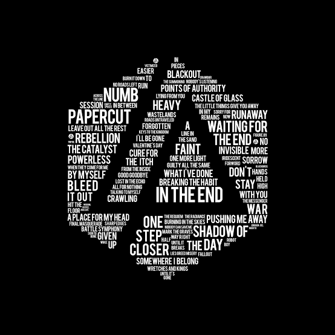
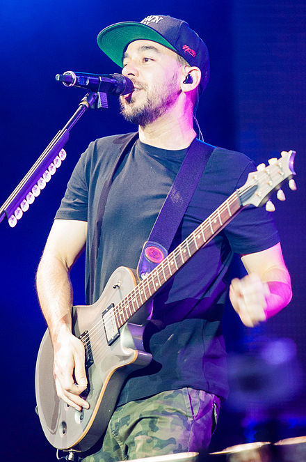
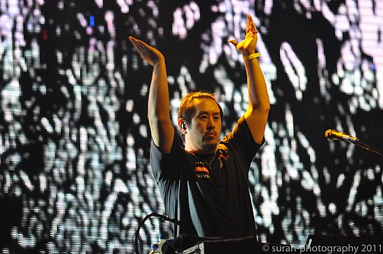
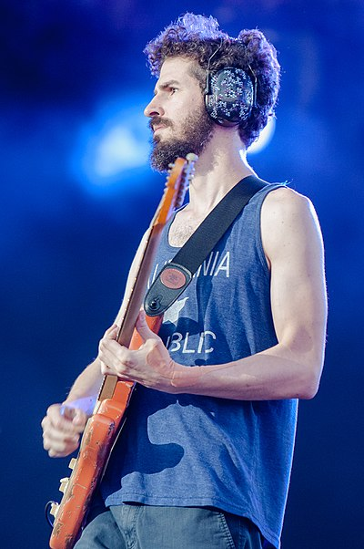
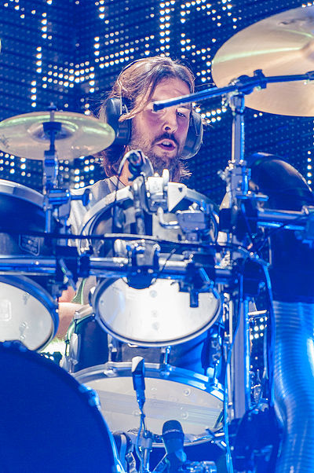
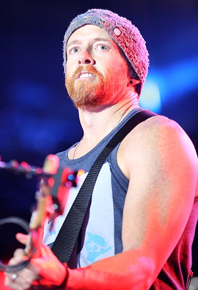
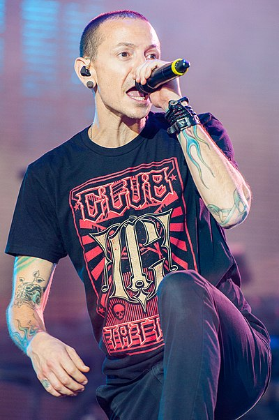

Mike Shinoda

Michael Kenji "Mike" Shinoda (Los Angeles, 11 de fevereiro de 1977 é um músico, produtor musical e artista norte-americano. Conhecido como vocalista, rapper, compositor e multi-instrumentista da banda estadunidense Linkin Park. Também tem um projeto paralelo chamado Fort Minor, mais voltado para o Hip Hop. Ele atuou como produtor de faixas e álbuns de Lupe Fiasco, Styles of Beyond e The X-Ecutioners.
Shinoda formou a banda Xero, que mais tarde foi renomeado de Linkin Park, com dois de seus amigos do ensino médio: Brad Delson e Rob Bourdon em 1996, depois se juntaram Joe Hahn, Dave Farrell e Mark Wakefield depois Chester Bennington substituiu Wakefield como o vocalista principal. A banda depois assinou um contrato com a Warner Bros Records.
Joe Hahn

Joseph "Joe" Hahn (Dallas, Texas, 15 de março de 1977) é o DJ da banda estadunidense Linkin Park.
Tem ascendência coreana e recebeu educação religiosa da igreja protestante. Frequentou a universidade de UCLA, onde estudou pintura e cinema tendo inclusive trabalhado nos efeitos especiais da a série X-Files. Na universidade conheceu Mike Shinoda, com quem viria a criar o 'Linkin Park'.
Brad Delson

Bradford Phillip Kaplan Delson (Agoura Hills, 1 de dezembro de 1977) é um músico, compositor e produtor musical americano, mais conhecido como um dos fundadores e guitarrista do grupo de rock estadunidense Linkin Park. Ele é mais conhecido como Brad Delson.
Brad é um dos mais descontraídos da banda. É casado com Elisa Boren e tem um filho chamado Jonah Taylor que nasceu em 25 de março de 2008. Formado em comunicações, ele é, segundo a banda, o integrante mais feliz. Mas, às vezes é muito anti-social. Chegou a deixar o cabelo crescer, pois curtia muito rock pesado. Ganhou sua primeira guitarra quando estava na 6ª série. É superfã dos guitarristas Dave Matthews e de Stef, dos Deftones. Antes de tocar no Linkin Park, pertenceu a uma banda chamada Pricks, em 1994.
Rob Bordoun

Robert Gregory Bourdon (Calabasas, Califórnia, 20 de Janeiro de 1979) é o baterista da banda Linkin Park. Ele é mais conhecido como Rob Bourdon.
Quando pequeno, Rob era forçado a estudar piano.
Hoje em dia ele toca sempre que tem tempo livre. Quando tinha nove anos de idade, Rob foi ao The Great Western Forum para assistir ao show da banda Aerosmith
(reza a lenda que sua mãe foi namorada do baterista do Aerosmith e foi ela quem ajudou a escolher o nome da banda).
Este foi seu primeiro show. Depois de vê-los tocar ele desejou um dia estar lá no palco tocando bateria. Aos 10 anos começou a tocar bateria e aos 13 anos e ele tocava músicas cover com seus amigos. Segundo ele, foi muito bom ver o nome da banda dele no anúncio de shows da casa onde ele se inspirou a tocar bateria.
Tocou em várias bandas quando era jovem. Em uma delas, tocou com Brad Delson. A banda se chamava Relative Degree, era uma mistura de rock com rap e funk e o único objetivo real deles era tocar no The Roxy, quando finalmente alcançaram o objetivo, a banda acabou.
Quando entrou no colegial, era ligado em funk.
Mais para a frente, Rob se juntou a Brad e Mike e juntos eles fundaram a banda Xero, que viria a ser o Linkin Park.
Dave Phoenix

David "Dave" Michael Farrell, também conhecido como Phoenix ("Fênix", do inglês americano), (Plymouth, 8 de Fevereiro de 1977), é o baixista da banda americana de rock, Linkin Park
Farrell nasceu em Massachusetts mas depois mudou-se para Mission Viejo, Califórnia quando tinha cinco anos. Ele estudou na Mission Viejo High School. Ele também se formou pela Universidade da Califórnia, Los Angeles, em 1999. Baixo, guitarra, cello e violino são os instrumentos que ele toca.
Farrell era membro da banda Christian ska, e conhecido como Tasty Snax. Na época em que fazia faculdade, ele ensaiava com Brad Delson em seu quarto. Porém, como ele tinha que tocar e viajar com o Tasty Snax, ele não podia tocar com Delson e sua banda, que mais tarde se tornou o Linkin Park. Depois de mudar seu nome para Snax, Farrell começou a tocar baixo na banda antes de sair mais uma vez para se juntar de vez ao Linkin Park como baixista. Seu companheiro de banda Mark Fiore virou videógrafo do Linkin Park.
Farrell citou como algumas de suas influências sua mãe e seu irmão, Joe, assim como Weezer, Beatles, os Deftones, John Deacon, The Roots, Bob Marley, Sarah McLachlan, Hughes & Wagner e Harrod & Funck.
Menções Honrosas
Vale mencionar também que a banda já teve 4 ex-integrantes,Mark Wakefield,Kyle Christener,Scott Koziol e Chester Bennington
Chester Bennington

Chester Charles Bennington (Phoenix, 20 de março de 1976 – Palos Verdes Estates, 20 de julho de 2017) foi um cantor, compositor, ator e vocalista da banda americana Linkin Park. Ele também trabalhou no grupo Dead by Sunrise e foi vocalista do Stone Temple Pilots entre 2013 e 2015.
Bennington ganhou notoriedade devido a sua carreira como vocalista da banda Linkin Park. No ano 2000, eles lançaram o disco Hybrid Theory, que se tornou um enorme sucesso de público e crítica. Em 2005, este álbum chegou a marca de 10 milhões de cópias vendidas apenas nos Estados Unidos.[1] A banda lançou outros trabalhos bem sucedidos, como os álbuns Meteora (2003), Minutes to Midnight (2007), A Thousand Suns (2010), Living Things (2012), The Hunting Party (2014) e One More Light (2017).
Em 20 de julho de 2017, Bennington foi encontrado morto em sua residência em Palos Verdes Estates, no sul da Califórnia. A causa da morte foi suicídio por enforcamento.

Os fãs da banda, fizeram homenagens e eventos memoriais em várias partes do mundo, incluindo em vários estados do Brasil, no Peru, México, na Alemanha, nos Estados Unidos, no Canadá, na Grécia, nas Filipinas, na Rússia, China, no Chile, na França, na Holanda e dentre outros locais. A canção mais utilizada nos tributos foi a "One More Light", que retrata sobre a perda de alguém. Após a banda ter selecionado a canção como um single de seu álbum homônimo, Shinoda escreveu: "One More Light foi escrito com a intenção de enviar amor para aqueles que perderam alguém. Agora nos encontramos no fim do recebimento. Em eventos memoriais, artes, vídeos e imagens de fãs de todo o mundo, que gravitaram-se em direção a essa música como sua declaração de amor e apoio para a banda e a memória de nosso querido amigo, Chester. Estamos muito gratos e mal posso esperar para vê-lo novamente".
Bennington também havia filmado um episódio de "Carpool Karaoke" seis dias antes de sua morte. A família de Bennington permitiu que o episódio fosse exibido em 12 de outubro de 2017. Em 27 de agosto, durante a cerimônia do MTV Video Music Awards de 2017, Jared Leto recebeu a atenção da mídia por sua homenagem a Bennington e Chris Cornell. Alguns de seus antigos companheiros de banda do Dead By Sunrise e Gray Daze se uniram para realizar uma homenagem a Bennington durante um show em 2 de setembro em Las Vegas.
O Linkin Park também organizou um tributo público em homenagem a Bennington, em Los Angeles, em 27 de outubro, intitulado Linkin Park and Friends - Celebrate Life In Honor of Chester Bennington.
O evento foi realizado no Hollywood Bowl e foi a primeira apresentação da banda após a morte de Bennington, juntamente com performances do Blink-182, membros do System of a Down, Korn, Avenged Sevenfold, Bring Me the Horizon, Yellowcard, a cantora Kiiara e entre outros.